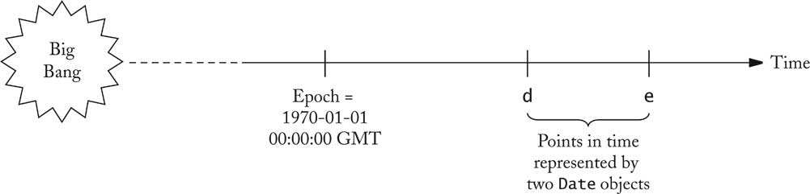
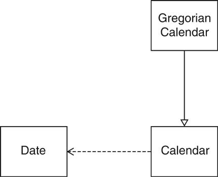
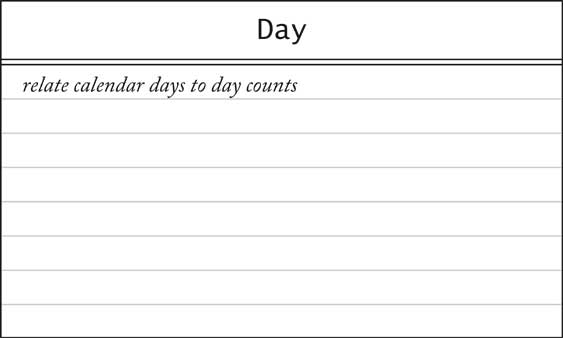
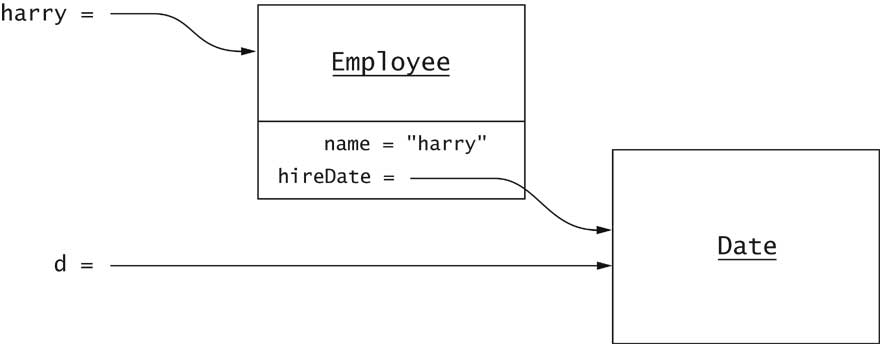
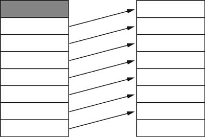
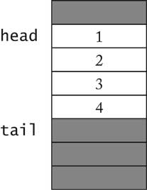
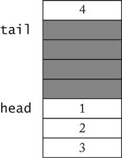
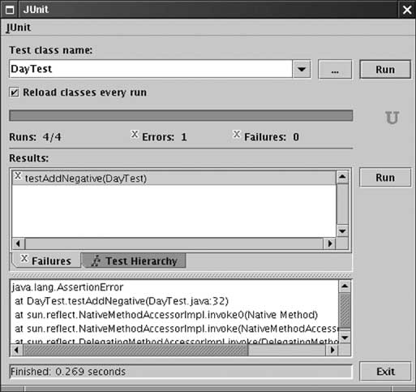

Object-Oriented Design & Patterns
Cay S. Horstmann
Chapter 3
The Object-Oriented Design Process

Chapter Topics
- An overview of the Date classes in the Java library
- Designing a Day class
- Three implementations of the Day class
- The importance of encapsulation
- Analyzing the quality of an interface
- Programming by contract
- Unit testing
Date Classes in Standard Library
Methods of the Date class
boolean after(Date other)
|
Tests if this date is after the specified date
|
| boolean before(Date other) |
Tests if this date is before the specified date |
int compareTo(Date other)
|
Tells which date came before the other
|
long getTime()
|
Returns milliseconds since the epoch
(1970-01-01 00:00:00 GMT)
|
void setTime(long n)
|
Sets the date to the given number of
milliseconds since the epoch
|
Methods of the Date class
- Deprecated methods omitted
- Date class methods supply total ordering on Date
objects
- Convert to scalar time measure
- Note that before/after not strictly necessary
(Presumably introduced for convenience)
Points in Time

The GregorianCalendar Class
- The Date class doesn't measure months, weekdays, etc.
- That's the job of a calendar
- A calendar assigns a name to a point in time
- Many calendars in use:
- Gregorian
- Contemporary: Hebrew, Arabic, Chinese
- Historical: French Revolutionary, Mayan
Date Handling in the Java Library

Designing a Day Class
- Custom class, for teaching/learning purpose
- Use the standard library classes, not this class, in your own
programs
- Day encapsulates a day in a fixed location
- No time, no time zone
- Use Gregorian calendar
Designing a Day Class
- Answer questions such as
- How many days are there between now and the end of the year?
- What day is 100 days from now?
Designing a Day Class

Designing a Day Class
- daysFrom computes number of days between two days:
int n = today.daysFrom(birthday);
- addDays computes a day that is some days away from a
given day:
Day later = today.addDays(999);
- Mathematical relationship:
d.addDays(n).daysFrom(d) == n
d1.addDays(d2.daysFrom(d1)) == d2
- Clearer when written with "overloaded operators":
(d + n) - d == n
d1 + (d2 - d1) == d2
- Constructor Date(int year, int month, int date)
- getYear, getMonth, getDate acccesors
Implementing a Day Class
Implementing a Day Class
Second Implementation
- For greater efficiency, use Julian day number
- Used in astronomy
- Number of days since Jan. 1, 4713 BCE
- May 23, 1968 = Julian Day 2,440,000
- Greatly simplifies date arithmetic
- Ch3/code/day2/Day.java
Third Implementation
- Now constructor, accessors are inefficient
- Best of both worlds: Cache known Julian, y/m/d values
- Ch3/code/day3/Day.java
- Which implementation is best?
The Importance of Encapsulation
- Even a simple class can benefit from different implementations
- Users are unaware of implementation
- Public instance variables would have blocked improvement
- Don't use public fields, even for "simple" classes
Accessors and Mutators
- Mutator: Changes object state
- Accessor: Reads object state without changing it
- Day class has no mutators!
- Class without mutators is immutable
- String is immutable
- Date and GregorianCalendar are mutable
Don't Supply a Mutator for every Accessor
- Day has getYear, getMonth, getDate
accessors
- Day does not have setYear, setMonth,setDate
mutators
- These mutators would not work well
- Example:
Day deadline = new Day(2001, 1, 31);
deadline.setMonth(2); // ERROR
deadline.setDate(28);
- Maybe we should call setDate first?
Day deadline = new Day(2001, 2, 28);
deadline.setDate(31); // ERROR
deadline.setMonth(3);
- GregorianCalendar implements confusing rollover.
- Silently gets the wrong result instead of error.
- Immutability is useful
Sharing Mutable References
Sharing Mutable References
Sharing Mutable References

Final Instance Fields
- Good idea to mark immutable instance fields as final
private final int day;
- final object reference can still refer to mutating object
private final ArrayList elements;
- elements can't refer to another array list
- The contents of the array list can change
Separating Accessors and Mutators
Separating Accessors and Mutators
Side Effects
- Side effect of a method: any observable state change
- Mutator: changes implicit parameter
- Other side effects: change to
- explicit parameter
- static object
- Avoid these side effects--they confuse users
- Good example, no side effect beyond implicit parameter
a.addAll(b)
mutates a but not b
Side Effects
- Date formatting (basic):
SimpleDateFormat formatter = . . .;
String dateString = "January 11, 2012";
Date d = formatter.parse(dateString);
- Advanced:
FieldPosition position = . . .;
Date d = formatter.parse(dateString, position);
- Side effect: updates position parameter
- Design could be better: add position to formatter state
Side Effects
Law of Demeter
- Example: Mail system in chapter 2
Mailbox currentMailbox = mailSystem.findMailbox(...);
- Breaks encapsulation
- Suppose future version of MailSystem uses a database
- Then it no longer has mailbox objects
- Common in larger systems
- Karl Lieberherr: Law of Demeter
- Demeter = Greek goddess of agriculture, sister of Zeus
Law of Demeter
- The law: A method should only use objects that are
- instance fields of its class
- parameters
- objects that it constructs with new
- Shouldn't use an object that is returned from a method call
- Remedy in mail system: Delegate mailbox methods to mail system
mailSystem.getCurrentMessage(int mailboxNumber);
mailSystem.addMessage(int mailboxNumber, Message msg);
. . .
- Rule of thumb, not a mathematical law
Quality of Class Interface
- Customers: Programmers using the class
- Criteria:
- Cohesion
- Completeness
- Convenience
- Clarity
- Consistency
- Engineering activity: make tradeoffs
Cohesion
Completeness
Convenience
Clarity
- Confused programmers write buggy code
- Bad example: Removing elements from LinkedList
- Reminder: Standard linked list class
LinkedList<String> countries = new LinkedList<String>();
countries.add("A");
countries.add("B");
countries.add("C");
- Iterate through list:
ListIterator<String> iterator = countries.listIterator();
while (iterator.hasNext())
System.out.println(iterator.next());
Clarity
Consistency
Consistency
- Bad example: String class
s.equals(t) / s.equalsIgnoreCase(t)
- But
boolean regionMatches(int toffset,
String other, int ooffset, int len)
boolean regionMatches(boolean ignoreCase, int toffset,
String other, int ooffset, int len)
- Why not regionMatchesIgnoreCase?
- Very common problem in student code
Programming by Contract
- Spell out responsibilities
- Increase reliability
- Increase efficiency
Preconditions
- Caller attempts to remove message from empty MessageQueue
- What should happen?
- MessageQueue can declare this as an error
- MessageQueue can tolerate call and return dummy value
- What is better?
Preconditions
- Excessive error checking is costly
- Returning dummy values can complicate testing
- Contract metaphor
- Service provider must specify preconditions
- If precondition is fulfilled, service provider must work
correctly
- Otherwise, service provider can do anything
- When precondition fails, service provider may
- throw exception
- return false answer
- corrupt data
Preconditions
/**
Remove message at head
@return the message at the head
@precondition size() > 0
*/
Message remove()
{
return elements.remove(0);
}
- What happens if precondition not fulfilled?
- IndexOutOfBoundsException
- Other implementation may have different behavior
Circular Array Implementation
- Efficient implementation of bounded queue
- Avoids inefficient shifting of elements
- Circular: head, tail indexes wrap around
- Ch3/queue/MessageQueue.java
Inefficient Shifting of Elements

A Circular Array

Wrapping around the End

Preconditions
- In circular array implementation, failure of remove
precondition corrupts queue!
- Bounded queue needs precondition for add
- Naive approach:
@precondition size() < elements.length
- Precondition should be checkable by caller
- Better:
@precondition size() < getCapacity()
Assertions
Assertions
public Message remove()
{
assert count > 0 : "violated precondition size() > 0";
Message r = elements[head];
. . .
}
Exceptions in the Contract
/**
. . .
@throws NoSuchElementException if queue is empty
*/
public Message remove()
{
if (count == 0)
throw new NoSuchElementException();
Message r = elements[head];
. . .
}
- Exception throw part of the contract
- Caller can rely on behavior
- Exception throw not result of precondition violation
- This method has no precondition
Postconditions
Class Invariants
- Condition that is
- true after every constructor
- preserved by every method
(if it's true before the call, it's again true afterwards)
- Useful for checking validity of operations
Class Invariants
Unit Testing
- Unit test = test of a single class
- Design test cases during implementation
- Run tests after every implementation change
- When you find a bug, add a test case that catches it
JUnit

JUnit
- Convention: Test class name = tested class name + Test
- Test methods start with test
import junit.framework.*;
public class DayTest extends TestCase
{
public void testAdd() { ... }
public void testDaysBetween() { ... }
. . .
}
JUnit
- Each test case ends with assertTrue method
(or another JUnit assertion method such as assertEquals)
- Test framework catches assertion failures
public void testAdd()
{
Day d1 = new Day(1970, 1, 1);
int n = 1000;
Day d2 = d1.addDays(n);
assertTrue(d2.daysFrom(d1) == n);
}